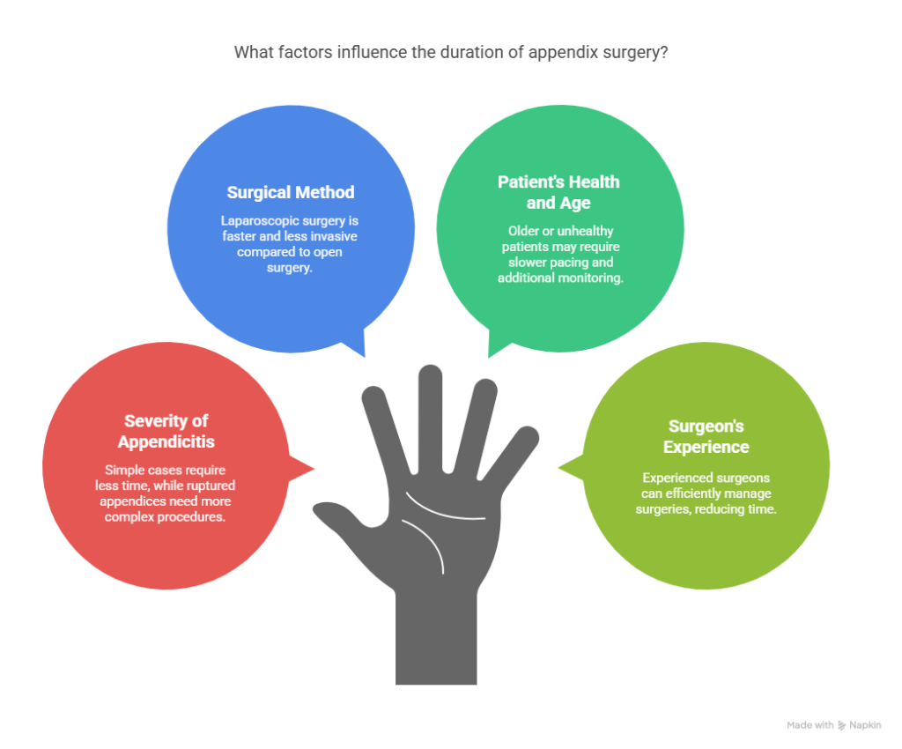
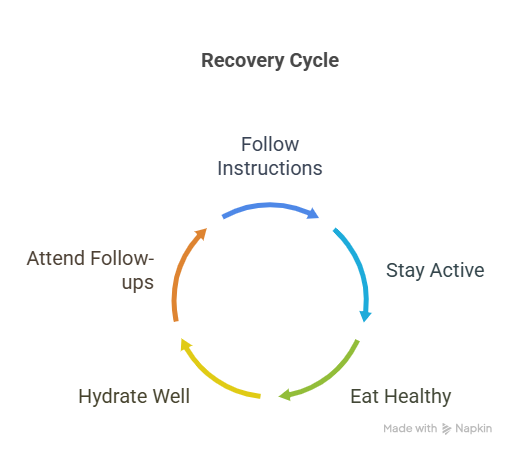

Appendectomy—the surgical removal of the appendix—is one of the most common emergency procedures performed worldwide. Despite its frequency, many patients and their families still wonder: “How long does it take to remove an appendix?” In this guide, we’ll walk you through everything you need to know about appendix operation time, recovery phases, and what to expect before, during, and after surgery.
We’ll also provide expert insights into appendectomy recovery time, how long appendix surgery typically takes for adults, and how to choose the right Appendix Surgeon in Delhi, such as Dr. Atul Peters, a well-known name in the field.
What is an Appendectomy?
An appendectomy is a surgical procedure to remove the appendix—a small, tube-shaped organ attached to the large intestine. When the appendix becomes inflamed or infected (a condition known as appendicitis), it can rupture and cause life-threatening complications. Surgery is the most definitive and immediate treatment.
Appendectomy can be performed using two main methods:
- Laparoscopic Appendectomy
- Open Appendectomy
The choice of technique can influence the appendectomy surgery time length and appendix surgery recovery time.
Laparoscopic Appendectomy
In most cases today, the laparoscopic appendectomy is preferred. This technique uses small incisions, a camera, and instruments to remove the appendix. On average:
- Appendectomy surgery time length: 30–60 minutes
- Hospital stay: Usually 1 day or same-day discharge
This method is quicker, less invasive, and offers faster healing, reducing appendix surgery recovery time dramatically.
Open Appendectomy
If the appendix has ruptured or there’s a more complex infection, the surgeon may opt for an open appendectomy. In this method, a larger incision is made in the lower right abdomen.
- Appendix operation time: 60–90 minutes
- Hospital stay: 2–3 days or more, depending on the severity
How long does appendix surgery take in total? For a routine laparoscopic appendectomy, you can expect it to be done within an hour. For more complicated or ruptured cases, the appendix surgery time duration may extend beyond 90 minutes.
Factors that affect Appendix Surgery Time Duration

Not every appendectomy takes the same amount of time. Several factors influence how long appendix surgery takes:
1. Severity of Appendicitis
- Simple, non-ruptured appendicitis: shorter surgery
- Perforated or ruptured appendix: longer and more complex procedure
2. Surgical Method
- Laparoscopic method: faster, less invasive
- Open surgery: more time-consuming but necessary in some cases
3. Patient’s Health and Age
Older adults or patients with other health conditions may require additional monitoring and slower surgical pacing.
4. Surgeon’s Experience
Experienced surgeons like Dr. Atul Peters, a renowned Appendix Surgeon in Delhi, can efficiently manage appendectomies, reducing overall appendix operation time.
Appendix Surgery Recovery Time: What to Expect
Appendectomy recovery time depends on the type of surgery, your overall health, and post-operative care. Here’s a typical timeline:
1. Hospital Recovery
- Laparoscopic: 12–24 hours
- Open: 2–3 days or more
2. At-Home Recovery
- Most patients return to normal activities within 2–3 weeks after laparoscopic surgery
- For open surgery, it may take 4–6 weeks
During recovery:
- Avoid lifting heavy objects
- Follow the diet and medication plan
- Monitor the surgical site for signs of infection
The shorter the appendix surgery time duration, the quicker the healing tends to be, especially for laparoscopic cases.
Tips for Faster Recovery

- Follow your surgeon’s instructions: Especially on movement, diet, and medication.
- Stay active but avoid strenuous tasks: Light walking helps prevent blood clots.
- Eat healthy foods: Focus on fiber-rich and protein-rich meals.
- Hydrate well: It aids digestion and speeds up healing.
- Attend follow-ups: Regular checks ensure no complications.
Choosing the Right Surgeon
Fast Relief, Expert Hands – Appendix Surgery by Dr. Atul Peters!
Contact Now!
Make An Appointment
When dealing with emergencies like appendicitis, time is of the essence. Choosing a surgeon with high success rates and experience in minimally invasive methods is crucial.
Dr. Atul Peters is a reputed Appendix Surgeon in Delhi, known for:
- Expertise in laparoscopic and robotic surgery
- Quick and efficient surgical techniques
- High success rate and low complication rate
- Personalized post-operative care
Conclusion
To summarize, how long does it take to remove an appendix? On average, expect the surgery to last between 30 and 90 minutes, depending on complexity. But the full journey—from diagnosis to recovery—spans a few weeks. Whether you’re undergoing surgery for the first time or helping a loved one prepare, knowing what to expect can ease your worries and help you recover faster.
If you’re looking for a safe, effective, and expert-guided experience, consulting a trusted professional like Dr. Atul Peters, an experienced Appendix Surgeon in Delhi, is your best choice. With the right care, most patients return to full health quickly and without complications.
Frequently Asked Questions
Q1: How long does appendix surgery take for adults?
A: For adults, laparoscopic appendix surgery typically takes 30 to 60 minutes. In complex cases, such as a ruptured appendix, the duration may extend to 90 minutes or more.
Q2: What is the average appendectomy surgery time length?
A: The average appendectomy surgery time is about 45–60 minutes for uncomplicated laparoscopic surgeries. Open surgeries may take longer, usually between 60–90 minutes.
Q3: What affects the appendix surgery time duration?
A: Factors include the type of surgery (laparoscopic vs. open), severity of appendicitis, presence of complications, and the patient’s overall health.
Q4: What is the typical appendix surgery recovery time?
A: Recovery takes about 2–3 weeks for laparoscopic surgery and 4–6 weeks for open surgery. Return to full activity may take up to 6 weeks, depending on the patient.
Q5: How long is appendix surgery for adults in an emergency?
A: Emergency appendix surgery time duration is typically the same—30–90 minutes—but prepping and recovery may take longer in complicated cases.
Q6: How can I speed up my appendectomy recovery time?
A: Follow post-op care instructions, eat nutritious meals, stay hydrated, and get enough rest. Light physical activity and regular follow-ups are also essential.
Recommended Further Reading
Have Personal Health Questions?
Consult with Dr. Atul Peters and our expert multidisciplinary team at Max Smart Super Speciality Hospital, Saket, New Delhi.
Book Your Consultation